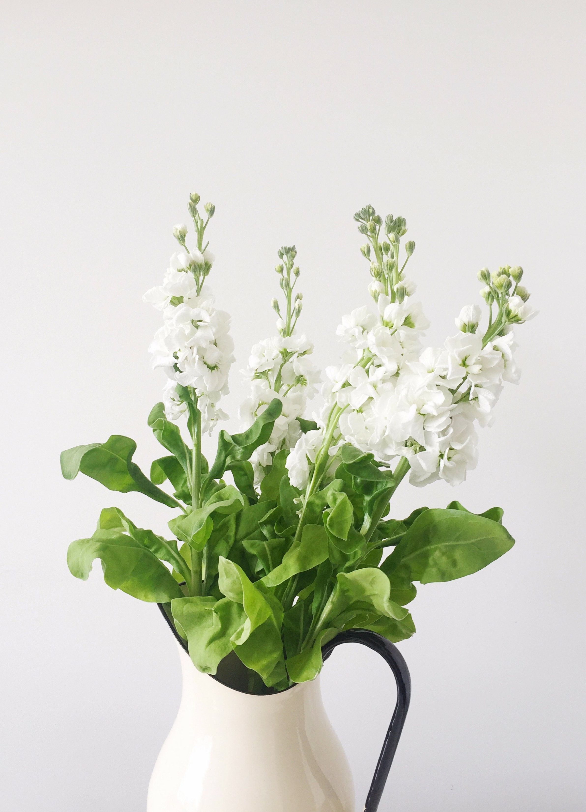
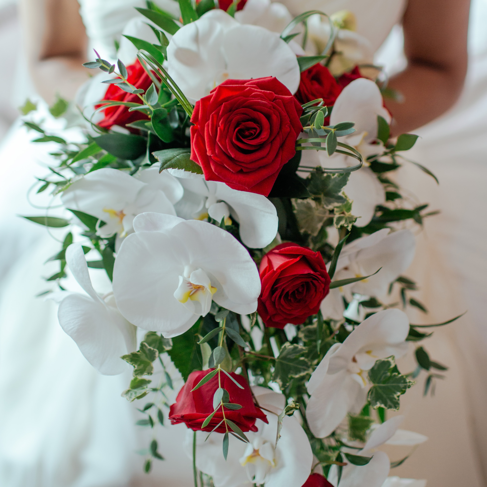

This compact arrangement showcases a few lillies, perhaps three to five, with
their slender, elongated stems gathered together with a variety of other flowers.
$25.00
Roses
A bouquet of roses encapsulates romance, appreciation, and a timeless charm, making
it a perfect gift for expressing love, admiration, or heartfelt emotions on any occasion.
$25.00
Allium
Those spherical clusters of tiny flowers on long stems make quite the statement in gardens.
People often plant them for their ornamental value, as they can add a dramatic touch to any garden landscape.
$25.00
Azalea
Azaleas come in various shades like pink, red, white, purple, and more. Their blooms often signify the arrival
of spring, and they thrive in acidic soil and partial shade, depending on the variety.
$25.00
Chrysanthemum
They come in a wide array of colors, shapes, and sizes, making them a favorite in gardens,
bouquets, and floral arrangements. Chrysanthemums are also a staple in autumn decorations
due to their late-season blooming.
$25.00
Zinnia
Zinnias are cheerful, vibrant flowers that bring a burst of color to gardens. They're loved
for their bright, solitary daisy-like flowers that come in a wide range of colors such as
red, pink, orange, yellow, purple, and white.
$25.00
Medium Bouquets

Alstroemerias
Alstroemerias are recognized for their delicate, lily-like appearance with speckled petals
and often feature multiple blooms on a single stem. They're popular choices for floral
arrangements due to their long vase life and the variety of colors they offer.
$30.00
Cornflower
Cornflower's are famous for their vivid blue blooms, although they also come in shades of pink, white, and purple.
These flowers have a distinctive disc-shaped center surrounded by delicate, spiky petals.
$30.00
Aster
Asters are beautiful daisy-like flowers that bloom in a variety of vibrant colors, including shades of
purple, pink, blue, and white. These perennials are known for their star-shaped flower heads.
$23.00
Hydrangea
One of the fascinating aspects of hydrangeas is their ability to change color based on soil pH.
Acidic soil tends to produce blue flowers, while alkaline soil yields pink flowers.
$30.00
Daisies
Daisies belong to the Asteraceae family and are characterized by their iconic shape—a bright yellow center
surrounded by delicate, white petals. However, some varieties can also be found in shades of pink, red, and purple.
$30.00
Peonies
Peonies are stunning, luxurious flowers celebrated for their large, lush blooms and captivating fragrance.
These perennial plants produce extravagant flowers in a range of colors, including shades of pink, red, white, and coral.
$30.00
Large Bouquets
Daffodil
Daffodils, also known as narcissus or jonquils, are iconic spring-blooming flowers with bright,
trumpet-shaped centers surrounded by petals.
$25.00
Anemones
Anemones are exquisite flowers with delicate, cup-shaped blooms and a diverse range of colors.
They're known for their papery petals that come in shades of white, pink, purple, blue, and red.
$25.00
Carnations
Carnations are beloved flowers known for their ruffled petals and long-lasting blooms. These flowers come
in a wide array of colors, including shades of pink, red, white, yellow, and even green and purple.
$25.00
Poppies
Poppies are stunning, vibrant flowers known for their delicate, papery petals and striking colors.
They come in various shades, including bright red, orange, pink, yellow, and white.
$25.00
Begonias
Begonias are a diverse and popular group of flowers known for their beautiful and vibrant blooms as
well as their attractive foliage. They come in various shapes, sizes, and colors.
$25.00

Dahlias
Dahlias are stunning flowers celebrated for their wide range of colors, shapes, and sizes. They're available
in almost every color imaginable, from bold reds, oranges, and yellows to soft pastels and even bi-colors.